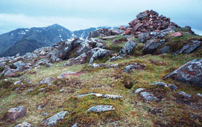

|
Kings House Hotel to Kinlochleven - Thursday, May 31
We requested "continental" breakfasts, thinking that we didn't need the tremendous breakfasts we'd been having. But this was larger than ever! There were various sorts of bread, including croissants, and cheese slices, cold cuts, eggs, yogurt, a variety of cereals and fruits, as well as juice,tea and coffee. When we finally rolled out, it was raining a little, so we put on all our rain clothes.
The regular route to Altnafeadh was closed, but there's a good, maybe better, alternate route. It follows the river at the base of Buachaille Etive Mor, so the views were fantastic. We frequently stopped to watch climbers on the mountain as they made seemingly slow progress. The only problem was that area was extremely wet and marshy. At one point, Alida jumped across a little stream and landed in squishy mud. She sank in up above her knee! (Unfortunately, I didn't have my camera ready... the picture below is just an easy, rocky stream crossing!)
| At Altnafeadh we crossed the road and
started up the Devil's Staircase. This is just a path up
the hillside, with zigzags near the top, for a climb of
850 feet. At the top there are amazing views back toward
Glencoe as well as forward toward the Mamores and Ben
Nevis. There's a ridge walk that crosses the West Highland Way at this point. Since this was a short mileage day, Thann and Andy and I decided to add a side excursion on this ridge path. Penny's knee had been hurting for days, and she certainly didn't want any extra walking, so she and Alida went on ahead to Kinlochleven. Our ridge walk (the five photos to the right and below) turned out to be excellent. We went to the top of one hill, and then another, and then another... I'm not sure how often we said "That next top isn't far; let's go!" We finally arrived at one that had severe drops on all sides except the way we had come, so it was a definite turn-around point. Besides, our lucky break in the rain seemed about to end, as the clouds were moving in and down. We ate lunch after returning to the Devil's Staircase, not wanting to be caught on the ridge in a total cloud cover. The path down to Kinlochleven gave good views ahead to the Mamore range. We could see Mamore Lodge, where we were to spend the night, all the way from the top of the crossing; it was a white speck on the hillside beyond Kinlochleven. |
|
|  | |
| We were fascinated by the huge water pipes that took water from Blackwater Reservoir down to the aluminium plant at Kinlochleven. We had seen the reservoir from the top of the ridge; it was miles away, but the pipes came across to a building beside the path before turning a corner and going steeply downhill. At the bottom we were right beside the pipes. |
The final half-mile (or was it a mile?) up to Mamore Lodge seemed long. I was afraid that Alida and Penny were worried about us, because we had thought our side excursion would take half an hour, and it was close to three hours. They had gotten to the Lodge at 3:00, and we dragged in, in the rain, at 6. They had indeed begun to be a little concerned. But they knew our weakness for "just one more peak", so weren't really surprised. We all enjoyed the Lodge -- the people were friendly and the food was good.
| Next Day | Previous Day | Home Page |